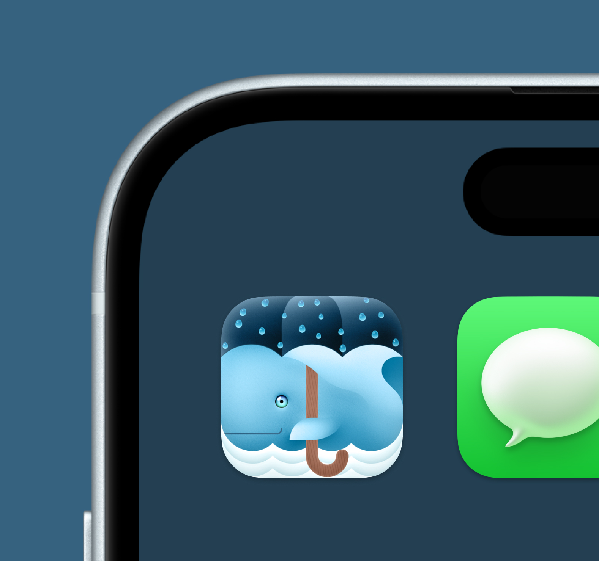
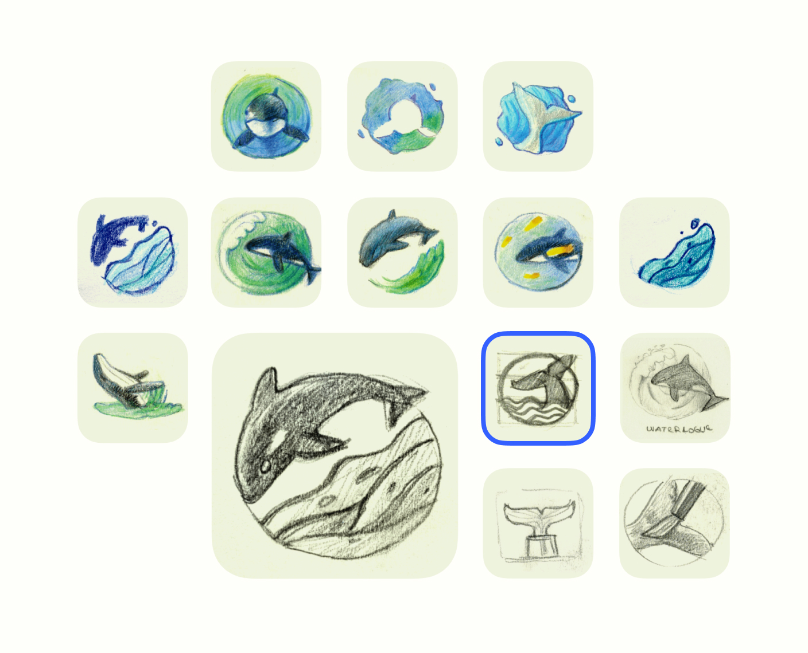
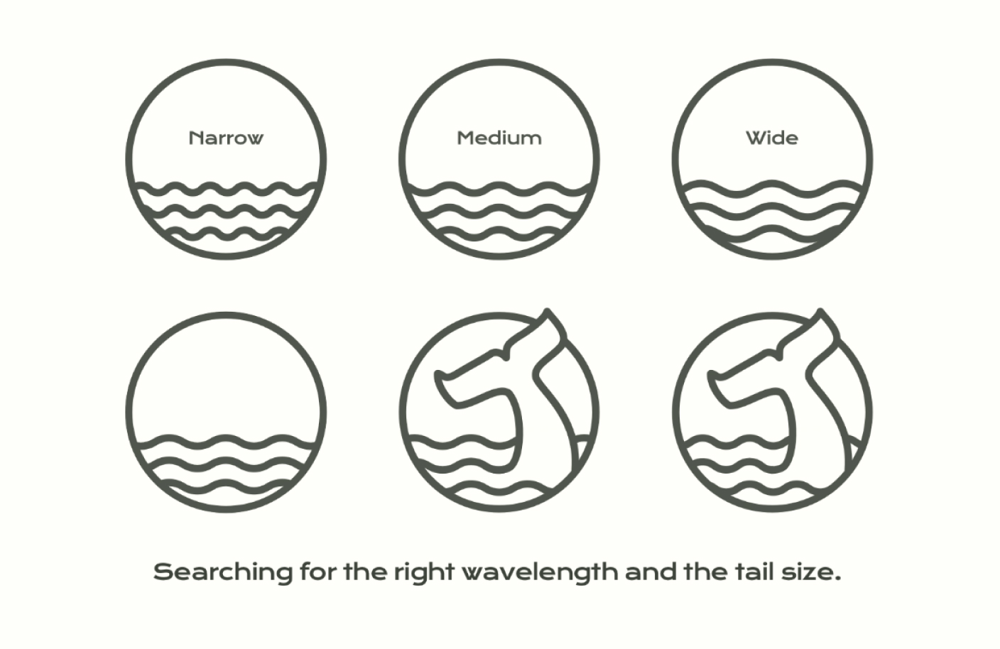
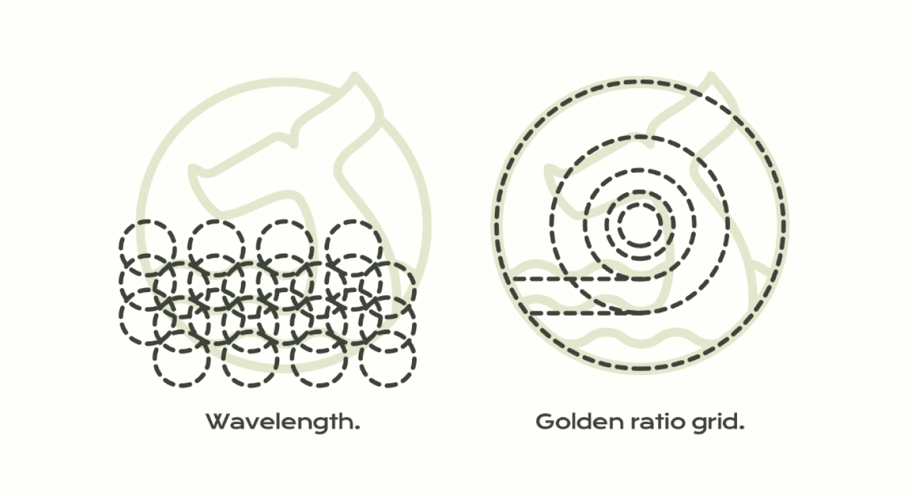
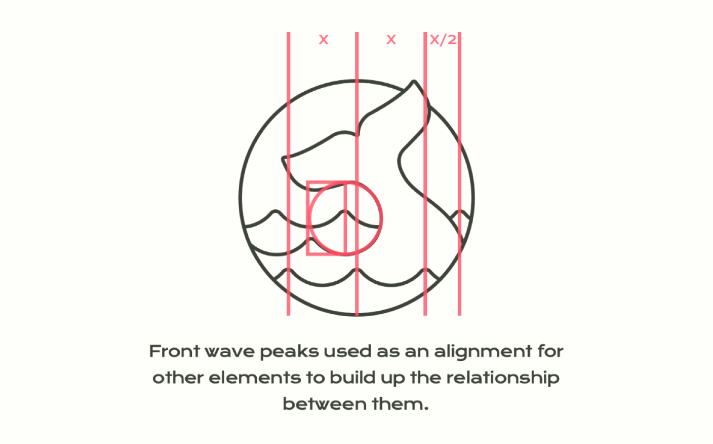
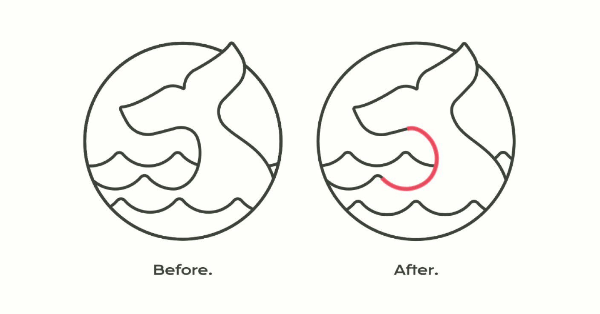
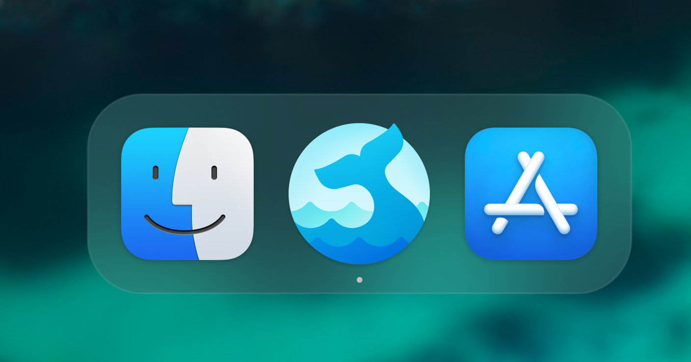
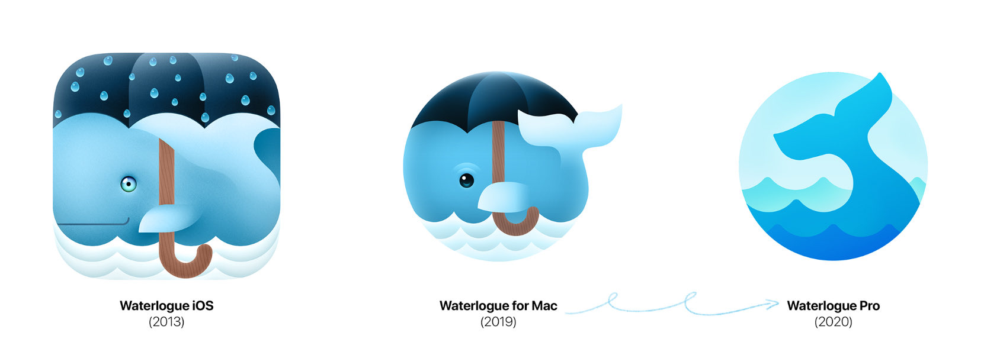

Waterlogue Pro macOS App Icon Creation
Project goal
A friend and client of mine — Tinrocket — asked me to create a new Mac app icon for the new Waterlogue Pro app. Back in the day, an iOS version of the icon was used for macOS, but John (the founder of Tinrocket) set the goal to make it more mature and more “pro”.

How
As the lead designer on this project, I started with hand-drawn sketches to get a feel for a new icon.
Hand-drawn sketches are a great way to quickly explore different shape variations. The shape should be simple, bold, and visually interesting.
For this project, I used my favorite Winsor & Newton colored pencils, which have very saturated colors. They were the perfect choice for drawing water splashes and translucency effects.

I showed John variations and he chose the whale’s tail up version. It wasn’t my favorite at the time because another icon had a more dynamic shape. But John has a great sense of taste, as has been shown many times before, so I agreed to go ahead with this one.
Process
I decided to start working with vector wave shapes first, to use as the basis for the whale’s tail. I made a few versions of the waves and discussed them again with John. His comment was to change the corners of the tail from square to more smooth. As we will see later, this made a big, positive difference.

I used a circular golden ratio grid to make sure the waves and tail fit perfectly in a balanced composition.

The proportions of the tail were calculated based on a wavelength of the wave. As you can see here, frontal wave peaks are used as a guide for other elements to establish the relationship between them.

During the next sync, John pointed out that even if the last wave peak is hidden under the icon section, we can still move it to make the icon visually more balanced. Also, make the tail base curve a circle to make it smoother and friendlier.

Results
The final version of the icon was tested with different colors to find a new look. But in the end it was decided to re-color it with original Waterlogue icons to keep the brand.

The project was completed in about two months. The main tool used was Adobe Illustrator.
Waterlogue Pro was launched on the Mac App Store and after some time became even more successful than the iOS version of the app.
Learnings
During this project, I learned that the client’s vision plays an important role, as they know their product better, as well as their audience and the brand that was established years before.
I’m very proud of the results, as the icon appears memorable, unique, with friendly, smooth and balanced shapes. The goal of making it more professional and amature was achieved.
